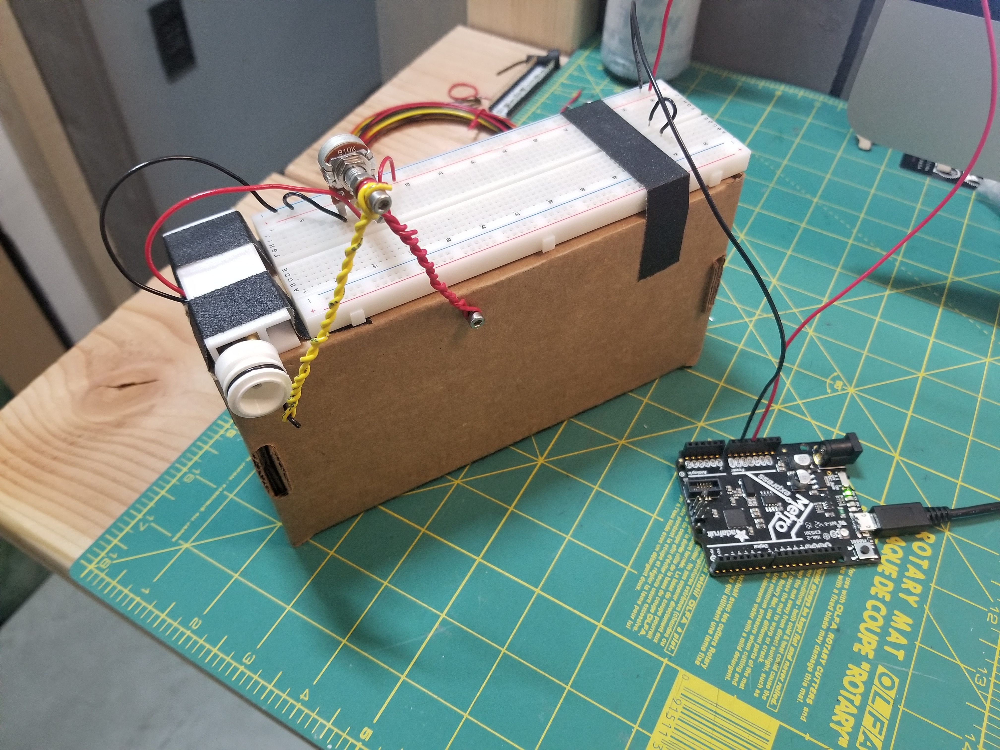

Look up artists like Arthur Ganson and others. These pieces probably took more than a few days to complete, but likely many of them started with study models made from things like cardboard and simple DC motors.
Here is a fun old reference for mechanisms: 507 Mechanical Movements, with animations here.
Making Things Move, chapters 4 and 8.
Use design/simulation tools for four-bar linkages or other mechanisms.
In this tutorial, the author uses a custom software to sketch a four-bar linkage system (you could use this link instead). He then explains how to build a motion study using Fusion 360 to preview the motion (minute 8).
The Book of Mechanics of Machines
Thang010146's 3200 mechanisms
